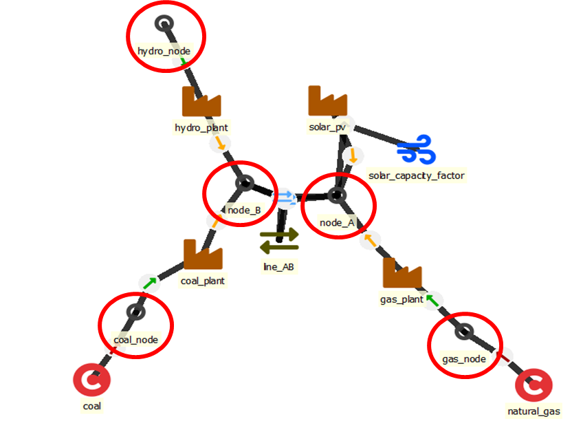

Nodes
Defining how the node functions
These parameters will define how the node will behave and use the data it is given (available choices are marked in italics):
name- unique name identifier (case sensitive)node_type- role of the node in the LP (default balance):- commodity - price-exposed source/sink with no balance constraint (fuel imports, no storage)
- balance - energy balance maintained every timestep
- storage - balance plus a state variable (battery, reservoir)
- balance_within_period - balance aggregated over the whole period (e.g. an annual gas budget)
invest_method- Choice of investment method: either not_allowed or then a combination of- invest and/or retire
- investment limits for each period and/or for all periods (total) or no_limit
- cumulative_limits considers investments, retirements and existing together, requires
cumulative_max_capacityand/orcumulative_min_capacity - any method other than not_allowed offers storage investment (retirement) in every investment period, also without
invest_cost(net_salvage_value) or where it is 0: that capacity has no annuity, itsfixed_coststill counts. To forbid investment in a period, use a period method (invest_period, invest_period_total and their invest_retire_ forms) and setinvest_max_period0 for it: the other methods do not useinvest_max_period. A 0 in aninvest_costmap does not forbid it.
inflow_method- choice how to treat inflow time series- use_original - does not scale the original time series (no value defaults here)
- no_inflow - ignores any inserted inflow time series
- scale_to_annual_flow - will scale the time series to match the
annual_flowso that the sum of inflow is multiplied by 8760/hours_in_solve - scale_in_proprotion - calculates a scaling factor by dividing
annual_flowwith the sum of time series inflow (after it has been annualized usingtimeline_duration_in_years) - scale_to_annual_and_peak_flow - scales the time series to match the 'annual_flow' target while transforming the time series to match the highest load with the 'peak_inflow'
unit_of_measure- [text] The unit of the node's amounts, for example m3, t or MWh_th (default MWh). A label only: FlexTool converts nothing. The node's results and the inputs about it are labelled in it: flows and the capacity of a unit on its side per hour (m3 → m3/h), storage andinflowper time step in the unit (m3), annual results per year (m3/a), prices and penalties per the unit (CUR/m3). See Unit of measure.

Unit of measure
unit_of_measure names what the node holds: MWh (the default) for electricity, m3 for water, t for
hydrogen, MWh_th to tell heat from electricity. FlexTool uses it only for the labels of the results, the plots
and the AI assistant; it changes no number. The node's rate is its unit per hour: m3 gives m3/h for its flows and
for the capacity of a unit that delivers to it, MWh_th gives MW_th. The full rule and the table of labels are in
Units of measure.
The inputs about the node are then in its units too:
inflow,existing,invest_max_totaland the other capacities: in the node's unit (m3, or m3/h for a unit's capacity on the node), entered as they are.penalty_up,penalty_down, thepriceof a commodity on the node,other_operational_costof a flow into or out of it: per the node's unit (CUR/m3). Size the penalties for the unit: the default 10 000 is per MWh.invest_cost,fixed_cost,net_salvage_value: per kW or kWh in an MWh model, so per 0.001 of the rate or the amount here. A water tank that costs 20 CUR per m3 of storage hasinvest_cost0.02 (20 × 0.001); a desalination unit that costs 500 CUR per m3/h of capacity hasinvest_cost0.5. Its annuity in the results is per m3 for the tank (a storage capacity is an amount) and per m3/h for the unit (a capacity is a rate).efficiencyof a unit between nodes of different units: output units per input unit (12 m3/MWh).
FlexTool warns when a connection, a commodity, a nodeGroup or flowGroup, or a group capacity limit spans nodes of different units (their sums are labelled Mixed units of measure!), when a reserve, inertia, non-synchronous or capacity-margin group has a member node that is not MWh, and when the value looks like a rate (m3/h instead of m3).
Data for nodes
Input data is set with the following parameters:
inflow- [MWh] per time step. Energy flowing into the node in each time step (negative is outflow, e.g. demand). The value is the energy of the whole step, not a rate: on 1 h steps it equals the average MW, and on 3 h steps it is 3 × the average MW. When the step length of your data changes, rescale the values yourself, e.g. sum hourly values to get 3 h steps, or halve MW values for 0.5 h steps. FlexTool does not convert them, and time-series values whose time names are not on the timeline are ignored. FlexTool sums the values for you only when a solve'snew_stepdurationcoarsens the timeline, and when a group'snew_stepdurationbalances the node per coarse step. A constant value is used as the same energy in every step. Constant or time series.annual_flow- [MWh/a] Annual flow in energy units (always positive, the sign of inflow defines in/out). Constant or period.peak_inflow- [MWh] per time step. The highest inflow of a time step that the scaled inflow should reach. Used only withinflow_method = scale_to_annual_and_peak_flow, which then needsannual_flowand aninflowprofile for every period. Use the same scale and sign asinflow(negative for a demand); if you change the step length, rescale it as you rescaleinflow. Each period reaches its ownpeak_inflow; with a solve'snew_stepduration,peak_inflowis matched per original time step.energy_margin_method- How the node's investment-stage energy margin is applied. Options: none (default, off, no scaling), inflow_multiplier (multiply this node's inflow byenergy_margin_multiplierin the investment solve only) and inflow_adder (addenergy_margin_adderMWh of extra demand to each time step of the investment solve only). See How to add an energy margin for investment adequacy.energy_margin_multiplier- [factor] Multiplier applied to the node's inflow in the investment solve only, whenenergy_margin_method = inflow_multiplier. Default 1 (no effect). A value of 1.1 makes the investment stage build for ~10% more demand, so the built capacity meets the true demand under the true (lower) annual VRE availability. Dispatch solves always see the true, un-margined inflow. The margin does not enter the reserve requirement (a groupincrease_reserve_ratio), the non-synchronous limit or the capacity margin, which follow the real demand (setcapacity_marginfor a capacity surplus). Constant.energy_margin_adder- [MWh] per time step of the timeline. Extra demand (negative inflow) added to every time step of the investment solve, whenenergy_margin_method = inflow_adder. The value is not a total that is divided over the steps: each time step gets the full value. On a timeline of 24 h time steps, a margin of 10 MW needs a value of 240. When the investment solve usesnew_stepduration, a solve step gets the sum of the values of the time steps it combines (a constant or period value counts once per time step: on 4 h solve steps of an hourly timeline, 10 adds 40 MWh per solve step). Default 0 (no effect). Adds a fixed amount of demand rather than scaling existing demand, so it also works on a node with no native inflow (e.g. a zero-inflow slack node) where the multiplier is a no-op. Dispatch solves always see the true, un-margined inflow. Like the multiplier, the added demand does not enter the reserve requirement, the non-synchronous limit or the capacity margin. Constant, period or period+time.existing- [MWh or count] Existing storage capacity or number of storage units (requiresnode_type=storage). Ifvirtual_unitsizeis given, thenexistingis the number of units (capacity =existing×virtual_unitsize). Otherwiseexistingis the existing capacity of a single unit (typically in MWh). Constant or period.invest_cost- [CUR/kWh] Overnight investment cost of new storage capacity. It is annualized overpayback_timewithdiscount_rate; withlifetime_methodreinvest_choice or no_reinvestment that annuity is spread evenly overlifetime_technicaland paid for each year the storage capacity is in service (with reinvest_automatic: each replacement at theinvest_costof the period it comes online, for its years in service). Construction time costs with their interest must be included here. Constant or period: the value of the period when the storage capacity is built (comes online) is used.net_salvage_value- [CUR/kWh] Net salvage value of the storage: scrap value minus decommissioning cost. An income when positive. A retirement receives it in full at the start of the retirement period (the investment is sunk); the value at the end of life is a level yearly credit that lowers the yearly price of storage kept to its end of life (see retirements). A period map can express a resale value that falls with time. Constant or period: the value of the period the salvage happens in.life_extension_cost- [CUR/kWh] One-off cost of keeping storage capacity in service forlife_extension_yearsbeyond the end of itslifetime_technical, paid when the extension starts. Only withlifetime_methodreinvest_choice or no_reinvestment. The model decides how much of the storage capacity still in service at its end of life to extend (see life extension). Needslife_extension_years; noinvest_methodis needed. Constant or period: the value of the period the extension starts in.life_extension_years- [years] How long storage capacity can be kept in service beyond the end of itslifetime_technicalforlife_extension_cost; the extended end of life is rounded byend_of_life_method. Needslife_extension_cost. Must be above 0. Constant or period: the value of the period the extension starts in.lifetime_method- What happens when storage capacity reaches the end of itslifetime_technical, as for units: reinvest_automatic (default) replaces it, without a model choice, by a new plant at the values of the period the replacement comes online, to the end of the horizon; reinvest_choice retires it and the model decides how much new storage to build; no_reinvestment retires it and allows investment only during the first technical lifetime from the model start. See lifetime, age and end of life.lifetime_technical- [years] Technical lifetime: how long the storage capacity operates, from its start of operation (existing storage: from the model start minus its age). Its end is rounded to a period start byend_of_life_method. Withoutpayback_time,invest_costis annualized over it. Constant or period: the value of the period the capacity comes online.payback_time- [years] Years over whichinvest_costis annualized withdiscount_rate; it sets only the size of the level yearly price the storage pays over itslifetime_technical(see discount calculations). No value:lifetime_technical. Constant or period.age_at_model_start- [years] orbuild_year- [year] (with themodelparameterstart_year): the age of the existing storage at the model start, which shortens its remaining life. Give one, not both. Constant.end_of_life_method- How an end of life inside a period is rounded to a period start: closest_seam (default), previous_seam (for capacity-adequacy studies) or next_seam, as for units.construction_lead_time- [years] Time from the investment decision until the storage capacity starts to operate. The start is rounded to the start of a period (seeconstruction_lead_time_method). Investments whose rounded start is after the end of the solve or the model horizon are not offered, with a warning. Constant or period. Default 0. See construction lead time.construction_lead_time_method- How the start of operation (decision year plusconstruction_lead_time) is rounded to the start of a period: immediate (no lead time, the storage capacity operates from the decision period), closest_seam (the nearest period start; a tie goes to the later one), previous_seam (the period start before), next_seam (the period start after). Without a value: immediate when there is no lead time, else closest_seam.discount_rate- [e.g. 0.05 equals 5%] Discount rate for investments (WACC). Reflects the financing cost and risk for this technology. In the same terms as the cost inputs: a real rate for inputs in real prices, a nominal rate for nominal inputs. Not the model'ssocial_discount_rate, which weighs costs over time. Constant or period.invest_max_total- [MWh] Largest allowed total storage investment over all solves. Every investment decision counts, also reinvestments and investments that are no longer in service; retirements and existing capacity do not reduce it (to limit the capacity in service, usecumulative_max_capacity). Constant.invest_max_period- [MWh] Largest allowed storage capacity coming online in each period. Existing capacity and retirements do not change it. With a construction lead time, the investment is decided earlier. Constant or period. A period map must give a value for every period in which capacity of the solve comes online: its investment periods, or with a construction lead time the periods the investments start to operate in (a missing period is an error).infmeans no limit in that period (a constantinf: in no period): the per-period row is left out and the investment there is bounded as with an invest_no_limit method (by the model'smax_flow_for_unconstrained_variables). A very large finite number is used as a limit and makes the solve numerically unstable; FlexTool warns about a value of 1e15 or more.-infis an error.invest_min_total- [MWh] Smallest required total storage investment over all solves, counted as forinvest_max_total. Constant.invest_min_period- [MWh] Smallest required storage capacity coming online in each period, counted as forinvest_max_period. Constant or period. A period map must give a value for every period in which capacity of the solve comes online: its investment periods, or with a construction lead time the periods the investments start to operate in (a missing period is an error). 0 or-infmeans no minimum in that period;infis an error.retire_max_period/retire_min_period- [MWh] Largest allowed / smallest required retirement of storage capacity in each period. Counts only what is retired in that period. Theexistingstorage can be retired with aninvest_methodthat allows retirement, and with invest_retire_… or cumulative_limits also the storage the model builds (see retirements). Constant or period. A period map must give a value for every investment period of the solve (a missing period is an error). For a maximum,infmeans no limit in that period (a constantinf: in no period) and its row is left out; for a minimum, 0 or-infmeans no minimum. A very large finite number is used as a limit and makes the solve numerically unstable; FlexTool warns about a value of 1e15 or more. The opposite infinity (-inffor a maximum,inffor a minimum) is an error.retire_max_total/retire_min_total- [MWh] Largest allowed / smallest required total retirement over all solves. Investments and existing capacity do not change it. Constant.cumulative_max_capacity- [MWh] Maximum cumulative capacity (considers existing, invested and retired capacity). Constant or period. A period map must give a value for every investment period of the solve (a missing period is an error).infmeans no limit in that period (a constantinf: in no period): the row is left out and the capacity there is bounded as without acumulative_max_capacity(by the model'smax_flow_for_unconstrained_variables). A very large finite number is used as a limit and makes the solve numerically unstable; FlexTool warns about a value of 1e15 or more.-infis an error.cumulative_min_capacity- [MWh] Minimum cumulative capacity (considers existing, invested and retired capacity). Constant or period. A period map must give a value for every investment period of the solve (a missing period is an error). 0 or-infmeans no minimum in that period;infis an error.fixed_cost- [CUR/kWh/a] Annual fixed cost for storage. New storage capacity pays it only while it operates. Constant or period.penalty_up- [CUR/MWh] Penalty cost for energy not served (decreasing consumption) in the node. The cost scales with both the magnitude (MW) and the duration (hours) of the violation. Default value is 10 000. Constant, period, time, period+time or stochastic time. The default applies to every node without a value of its own, and to the periods and timesteps that a map leaves out.penalty_down- [CUR/MWh] Penalty cost for excess energy (increasing consumption) in the node. The cost scales with both the magnitude (MW) and the duration (hours) of the violation. Default value is 10 000. Constant, period, time, period+time or stochastic time. The default applies to every node without a value of its own, and to the periods and timesteps that a map leaves out.- A storage node keeps its balance slack (
penalty_up,penalty_down) unless itspenalty_methodis off. When a unit or a connection links it to a node withpenalty_methodoff, its slack can supply or absorb that node's energy and so bypass the hard balance at the storage node's penalty; a warning names such storage nodes and the nodes they are linked to, once per solve. Give the storage nodepenalty_methodoff too (or a high penalty) so that a shortfall shows where it arises. virtual_unitsize- [MWh] Size of one unit. With it,existingis the number of units. Investments and retirements are continuous; their limits are in MWh. No value: the existing capacity, or 1000 MWh without it.self_discharge_loss- [-] e.g. 0.01 means the content shrinks by the factor 1/1.01 every hour. Loss of stored energy over time: the content decays continuously at ln(1 + loss) per hour, for every modelled time step whatever its length; energy charged or discharged within a step is treated as spread evenly over the step. Constant, period, time or period+time (a time-varying loss decays each step at its own rate; a coarse step or timeset block decays by the sum of its hours' losses; this is exact for stored energy, while energy charged within such a step is weighted as if the loss were constant over the step, which overstates what is kept when the loss changes a lot inside the step).availability- [e.g. 0.9 means 90%] Fraction of capacity available for storage. Constant, period, time, period+time or stochastic time.invest_forced- [MWh] Forces exactly this much new storage capacity to come online in the period, overriding the investment optimisation (as settinginvest_min_periodandinvest_max_periodequal). Constant or period.constraint_state_coeff- A map of coefficients (Index: constraint name, value: coefficient) placing the storage state variable on the left side of a user-definedconstraint. See User constraints.constraint_invested_capacity_coeff- A map of coefficients (Index: constraint name, value: coefficient) putting the storage capacity that comes online in each period on the left side of a user-definedconstraint. Without a construction lead time, this is the storage capacity invested in that period. Coefficient per MWh. See User constraints.constraint_cumulative_pre_built_capacity_coeff- A map of coefficients (Index: constraint name, value: coefficient). Puts the storage capacity in service at the start of each period on the left side of the user constraint. This is existing capacity plus capacity that came online in earlier periods, minus earlier retirements. Capacity coming online in the period itself is in the invested term. Coefficient per MWh. See User constraints.constraint_capacity_coeff- A map of coefficients (Index: constraint name, value: coefficient). Puts the node's storage capacity in service in each period on the left side of the user constraint (existing plus investments still in service minus retirements). Coefficient per MWh. Capacity in construction is not included. See User constraints.constraint_retired_capacity_coeff- A map of coefficients (Index: constraint name, value: coefficient). Puts the storage capacity retired in each period on the left side of the user constraint. Coefficient per MWh. See User constraints.constraint_in_construction_capacity_coeff- A map of coefficients (Index: constraint name, value: coefficient). Puts the storage capacity in construction in each period on the left side of the user constraint. Capacity is in construction from the period of the investment decision until it comes online. It is zero without a construction lead time. Coefficient per MWh. See User constraints.node__profilewithprofile_method- limits the storage state with a profile (upper_limit, lower_limit, fixed; the profile is a share of the storage capacity). The default is none: the profile is not applied, and FlexTool warns about a link without aprofile_method. An upper_limit or fixed link to a profile without a value in the scenario stops the run with an error (it would hold the storage state at 0). See units constrained by profiles.
Using nodes as storages
FlexTool manages storages through nodes. A regular node maintains an energy/material balance between all inputs and outputs (node_type=balance). A storage node includes an additional state variable, which means that the node can also use charging and discharging of the storage while maintaining the energy balance. A storage node is created by setting node_type=storage and by adding storage capacity using the existing parameter and/or by letting the model invest in storage capacity (invest_method, invest_cost, invest_max_period and invest_max_total parameters).
Since FlexTool allows different temporal structures (multi-periods, rolling optimization, etc.) there needs to be ways to define how the storages behave when the model timeline is not fully consequtive. By default, storages are forced to match start level to the end level within timesets. This is an acceptable setting for small storages that do not carry meaningful amounts of energy between longer time periods in the model.
There are three methods associated with storage start and end values: storage_binding_method, storage_start_end_method and storage_solve_horizon_method.
- The most simple one of these is the
storage_start_end_methodand it overrides the other methods, since it forces the start and/or the end state of the storage to a predefined value based on the proportional parametersstorage_state_startandstorage_state_end(proportional means that the parameter needs to be set between 0-1 and will be scaled by the storage capacity in the model). The default is fix_nothing (the start and the end are not fixed). fix_start needsstorage_state_starton the node and fix_end needsstorage_state_end; fix_start_end needs both. A node that fixes a start or an end without its value stops the run with an error naming every such node, the method and the missing parameter (set the value, or a method that does not fix that end). In older databases the default was fix_start, and a fix without its value was not applied, or pinned the node at 0 when another node had a value; the upgrade rewrites such stored methods to what they did (fix_nothing, or a value of 0) where every scenario of the database used them the same way, and lists them (results unchanged). A node that used the old default with its ownstorage_state_startgets fix_start written in that value's alternative (results unchanged). Where scenarios differ, the method is left and the error names the scenarios. Storage nodes that relied on the old default now start free; in a model where another node had astorage_state_startthey started at 0 (or at their own value) before, and runs of an upgraded database name them (see "Behaviour-change notices" below). These two parameters affect only the first and the last timesteps of the entire model (even when the model has more than one solve). A later solve or roll starts from the storage state realised before it: the end of the realised part of the previous roll or solve at the same nesting level or below (so a storage or investment solve continues from the dispatch solved below it). In nested solves the start applies to the first step of each nested level where the level first appears. A node whose end an upper-level solve fixes (storage_nested_fix_method) and that chains forward there (bind_forward_only, or bind_within_solve in a rolling solve under fix_quantity or fix_usage; also bind_within_period, and bind_within_timeblock, which a rolling solve uses as bind_within_period, when the first roll's horizon cuts the period, whose wrap would otherwise land on the upper target) starts instead from the level the upper solve planned for the same moment, unless fix_start applies (the lower level starts with the model): the lower solve then works with the energy of the upper plan and cannot start fuller than it. A cyclic binding method (bind_within_timeblock, bind_within_period, a looping bind_intraperiod_blocks, and bind_within_solve in a solve that is not rolling) cycles within each later solve without the start value; in a rolling solve bind_within_solve continues from roll to roll, and the per-period methods continue a period that a roll boundary cuts (see below). In a solve with representative periods the start and the end value of a _blended_weights node set the stored level where its base-period chain starts and ends (the chronological level that the representative blocks add up to, not a state inside the first or the last block, whose offset is free); a later solve (or roll) with representative periods starts the base-period chain of a bind_forward_only_blended_weights node from the level realised before it, and a solve with representative periods hands on the level of its chain at the end of its realised period (not a state inside a representative block). The end value (fix_end, fix_start_end) applies to the last timestep of the entire model, in every solve whose horizon contains that timestep: e.g. both an investment solve and the last dispatch solve (or roll) when both reach the end of the model, the solve of each nested level that contains it, and a roll whose look-ahead reaches it; a solve whose horizon ends earlier is not pinned. In a stochastic solve each terminal branch ends at it. Where an upper-level solve fixes the storage at that step withstorage_nested_fix_methodfix_quantity or fix_usage, the upper solve's value takes precedence; fix_price only values that end, so the end value still applies. A node that chains forward (bind_forward_only, bind_forward_only_blended_weights) and whose start the solve decides ends at least at that start (the matching end), so that the solve cannot use energy that was never produced: with a free start (fix_nothing, fix_end) the end is at least the level the chain started from (with fix_end or a reference value this bounds the start by the end); with fix_start on storage the solve can invest in during the period it starts in, the end holds at least thestorage_state_startshare of the capacity built in that period. Both are inequalities: a start of 0, or no investment, always meets them. Storage capacity that comes into service later in the model (built, or a largerexistingin a later period) holds no energy of its own: the level continues from the previous step (or the carry, in MWh) and onlyfix_startat the start of the model fills a share of the capacity. This applies in a solve that holds both the start of the model and its last step (a single solve, an investment solve over the whole horizon), in every solve with representative periods (whose chain always starts in the solve) and, for a free start (fix_nothing), in a rolling solve without representative periods: its first roll ends its horizon at least at the level it starts from, and the rolls reaching the end of the model end at least at that level; likewise a later solve of a sequence (also a later rolling solve, or a later instance of a nested rolling solve) that continues the chain from a carry and reaches the end of the model ends it at least at the level the model started it from at that nesting level (a carried start is not a decision of that solve, so the end is not held to it); otherwise a solve without representative periods whose start is carried, or that does not reach the end of the model, does not apply it. A free start is therefore matched over a sequence, while an explicit start (fix_start, or the reference start of use_reference_value) on storage that an investment solve not reaching the end of the model can build or extend is not: a warning names such nodes. Capacity the solve can extend (life_extension_cost) in the start period counts as capacity it can invest in. fix_start on capacity the solve cannot change, with a free end, is an explicit start energy that the run may use: a valid model of an initial stock (an endowment), named with its total size in a warning (one line per solve). fix_start_end withstorage_state_endbelowstorage_state_startis a planned drawdown of the existing storage. Storage the solve can invest in during the start period must still return its start energy (the matching end stays), which caps that investment atstorage_state_end× existing / (storage_state_start−storage_state_end). The same holds for use_reference_value whose reference value at the end lies below the start (seestorage_solve_horizon_method).storage_start_end_methodis meant for simple models: in a model with several solves or rollsstorage_state_reference_valuewithstorage_solve_horizon_methoduse_reference_value is usually the better choice, since it guides the storage at the end of every solve horizon (from a time series when one is available), not only at the end of the model. -
storage_binding_methodchooses the cycle-closure scope for the storage state over discontinuities in the model timeline. There are seven cycle-scope methods plus one orthogonal aggregation method. See the parameter description inflextool/schemas/spinedb_schema.jsonfor the canonical enumeration; in short:-
bind_within_timeblock — state cycles within each timeblock (block start = block end + flows). With
fix_startthe start state is pinned at the last step of the first timeblock, the state the first step starts from. Timeblocks are meant for solves that are not rolling, e.g. investment or storage solves on sampled weeks or representative periods. A rolling solve runs over a continuous timeline, so each of its periods is one timeblock: it uses bind_within_timeblock as bind_within_period (see below) and prints one line naming how many nodes and the first. A solve that is not rolling (e.g. an investment solve above the rolling dispatch) keeps bind_within_timeblock. -
bind_within_period — state cycles within each FlexTool period; blocks chain inside the period. In a rolling solve a period that a roll begins cycles within its part in the roll; a roll that starts inside a period continues it (see below).
-
bind_within_solve — state cycles across the whole solve horizon. With
fix_startthe start state is pinned at the last step of the solve, the state the first step starts from (bind_within_period: at the last step of the first period). In a stochastic solve the cycle closes once per path: the last step of every forecast branch ends at the level the solve's first step starts from; when the forecasts open in the solve's first period, each forecast's first step continues from the last step of its own path, so they all start from the same level. Withstorage_start_end_methodfix_start (or fix_start_end) the start of each forecast is pinned to the given share (storage_state_start) of that forecast's own storage capacity, so where the capacity differs by forecast (investment or divestment per forecast) the starting energy differs although the share is the same; without a fixed start all the forecasts start from the same level. -
In a rolling solve (
solve_moderolling_window, without representative periods; also bind_within_solve_blended_weights, which such a solve uses as bind_within_solve) the solve is the cycle: the first roll cycles on itself as above (its end is its start, pinned byfix_start), and every later roll continues from the storage level realised by the previous roll. A roll whose horizon does not reach the end of the solve ends at least at the level it started from (lower only by the node's ownself_discharge_lossandinflow, what doing nothing would leave), so that it does not empty the storage in its look-ahead. Each roll whose horizon reaches the last step of the solve (two rolls when the horizon is not a multiple of the jump) ends at the level the first roll started from, so the solve returns the energy it took. With several periods that level is kept in MWh: where the capacity changes between periods, the end is the start energy, not the same share of the new capacity, but never more than the storage capacity of the closing period. An upper-level fix_quantity or fix_usage at the end of a roll's horizon replaces these end conditions there (the upper solve's target carries its own cycle), fix_price replaces the end of a roll that does not reach the end of the solve but only values the end of the closing rolls, and fix_end wins at the last step of the model; with fix_end and without fix_start the first roll's cycle is pinned atstorage_state_endwhen the solve reaches the end of the model. A roll that cannot reach the closing level (a long-duration store whose level drifted during the year) uses the node's penalty slack: such stores need a storage solve above the dispatch (storage_nested_fix_method). -
bind_within_period in a rolling solve (without representative periods; also bind_within_period_blended_weights, which such a solve uses as bind_within_period, and bind_within_timeblock, which it uses as bind_within_period) follows the same rule per period: a roll that starts inside a period that an earlier roll began continues it from the level realised by the previous roll, ends its part in the roll at least at that level, and the roll(s) that hold the period's last step end it at the level it started from in the roll that began it (in MWh, at most the capacity of the closing period). The periods that begin in a roll cycle within their part in the roll, as before. A
rolling_solve_jumpof whole periods never starts a roll inside one, so nothing changes then. The start of a period that begins in a roll's look-ahead is set by the next roll that begins it; the roll choosing it sees only its own horizon, so a later roll may need the node's penalty slack to return to it. -
bind_forward_only (default) — state chains forward across the solve; no end-to-start closure. In a stochastic solve whose forecasts open in the solve's first period, all the forecasts start from the same level (the carried state, or without one a single free level). The exception is
fix_start(orfix_start_end): each forecast's start is thestorage_state_startshare of its own storage capacity, so the starting energy differs between forecasts whose capacity differs (investment or divestment per forecast). -
bind_within_solve_blended_weights, bind_within_period_blended_weights, bind_forward_only_blended_weights — representative-period variants of the three above. They apply RP weighting on top of the same cycle scope. With several periods each period uses its own representative periods and base periods (also when periods share a timeset); bind_within_solve_blended_weights and bind_forward_only_blended_weights chain the periods in solve order like bind_within_solve / bind_forward_only. With a blended variant every period of the solve needs a timeset with
representative_period_weights. In a stochastic solve each forecast branch period uses the representative periods of the period it branches from, and each branch is independent: its first period continues from the last base period of the trunk period (the shared period before the split), a later period from the previous period of the same branch. bind_within_solve_blended_weights closes once per path: every branch's last period ends at the level the trunk period starts from. bind_within_period_blended_weights closes every branch period on itself. When the forecasts open in the solve's first period, all of them start from the same level (bind_within_solve_blended_weights through its closure, bind_forward_only_blended_weights through an equal chain start); withfix_starteach forecast's chain starts at thestorage_state_startshare of its own storage capacity, as with bind_forward_only. The level a bind_forward_only_blended_weights chain starts from is within the storage capacity, as every base-period level. Inside the non-anticipativity window of a node in aninclude_stochasticsgroup the start levels of the representative blocks are the same in every forecast. A rolling solve (solve_moderolling_window) on representative periods stops with a configuration error: rolling over representative periods is not supported (use a single solve on the representative periods, and roll a separate solve over a timeset withoutrepresentative_period_weights). -
bind_intraperiod_blocks — orthogonal aggregation method: state is held constant within each block and the energy balance of the node is summed over each block (every flow stays at the solve's time step); the blocks of a period form a loop, and the state of a block is its state at the end of the block. With
fix_startthe start state is pinned at the end of the first period's last block, the state the first block starts from. In a rolling solve (solve_moderolling_window) the blocks of each roll also end at the end of the roll's realized part. A period that the roll holds whole loops as above (so a single roll over the whole timeline gives the same result as a solve that is not rolling). In a period that the roll holds only in part, the blocks chain forward: the first block of the period continues from the previous step of the roll, and the storage level is carried from roll to roll, as for bind_forward_only. When the roll's first period is held in part, the roll starts fromfix_start(first roll) or from the level carried from the previous roll. With neither (fix_nothing), the first block has no state change, so its flows must balance on their own. Without a loop,storage_solve_horizon_methodsets the end of the roll; it also sets the end of a period held in part when the next period of the roll is held whole (that period loops, so nothing continues from the end of the part). A period held in part is still closed over the rolls: the roll(s) that hold its last step end it at the level it started from (its start level in the roll that began it), a later roll that does not reach its end ends its part at least at the level it started from, and so does the roll that begins the period at its first step (instead of the horizon method); a period that begins after the first step of a roll keeps the horizon method at the end of that roll. Arolling_solve_jumpthat is a whole number of periods keeps every realized period looping; otherwise a warning is given.
-
-
A rolling solve over a timeline with gaps (a period with several timeblocks, e.g. sampled weeks) stops with a configuration error: rolling solves need a continuous timeline; use a single solve for sampled timeblocks.
-
In a solve on representative periods, bind_forward_only (also the default) stops the run with a configuration error naming how many nodes and the first: the forward chain runs through the representative periods without their weights. Blended weights need to be provided: choose a _blended_weights method (or bind_within_timeblock). With fix_start_end the binding method is ignored: a bind_within_timeblock, bind_within_period, bind_within_solve or bind_intraperiod_blocks node with fix_start_end chains forward on the base-period chain there (as bind_forward_only_blended_weights), so its start and end are pinned on the weighted chronological level. In a solve that mixes periods with and without representative periods (where no base-period chain spans the solve) such a node cycles within each timeblock instead (bind_within_timeblock: no energy moves between the representative periods;
storage_state_startpins the first timeblock's cycle andstorage_state_endthe last step of the model). -
In a solve on representative periods, bind_within_solve, bind_within_period and bind_intraperiod_blocks (without fix_start_end, see above) move the storage level from the end of one representative period into the start of the next without their weights, while the flows of each representative period count with its weight; the run prints a warning naming how many nodes and the first. This is reasonable when the representative periods have equal weights, or when the timing of the storage's inflows does not matter (e.g. pumped hydro, a large heat storage). Otherwise energy stored in a period of low weight can serve a period of high weight: the _blended_weights variants weight the transfer, and bind_within_timeblock cycles the storage within each representative period (each representative period is one timeset block).
-
Silent-degrade behaviour: any
*_blended_weightsmethod on a node in a solve whose active timeset has norepresentative_period_weightsis automatically downgraded to the corresponding non-RP variant for that solve. The same storage entity can therefore drive an RP investment solve and a chronological dispatch solve back-to-back without changing the parameter value. -
Older databases: the parameter used to take an array of methods, and three methods had other names (bind_within_timeset → bind_within_timeblock, bind_using_blended_weights → bind_within_solve_blended_weights, bind_within_model → bind_within_solve). Migration reduces an array to one method, by priority, and renames the old methods.
storage_solve_horizon_methodis meant for models that roll forward between solves and have an overlapping temporal window between those solves (e.g. a model with 36 hour horizon rolls forward 24 hours at each solve - those 12 last hours will be overwritten by the next solve). In these cases, the end state of the storage will be replaced by the next solve, but it can be valuable to have some guidance for the end level of storage, since it will affect storage behaviour. There are three methods: free is the default and will simply let the model choose where the storage state ends (usually the storage will be emptied, since it would have no monetary value). use_reference_value will use the value set bystorage_state_reference_value(a share of the storage capacity in the period, invested storage included) to force the end state in each solve (the last step of its last period and of each stochastic branch of it) to match the reference value (not for a node whosestorage_binding_methodties its end to its start: bind_within_timeblock, bind_within_period, bind_within_solve and bind_intraperiod_blocks (in a rolling solve only when the roll holds its last period whole: otherwise its blocks chain forward and the pin applies, also at the end of a period held in part that a period held whole follows), including a _blended_weights node in a solve without representative periods, which uses the method without _blended_weights). In a solve with representative periods a bind_forward_only_blended_weights node takes the reference value at the end of its base-period chain (the level at the end of the last base period; the reference is read at the last step of the last representative block); a bind_within_solve_blended_weights or bind_within_period_blended_weights node takes none (its chain closes on itself). Without fix_start the start comes from the reference value at the first step (the model's first step in the first solve), not free; with fix_start itsstorage_state_startwins, and a warning names the nodes whose two values differ. A reference series that falls during the year (a historical drawdown) thus drains the existing storage by the drop, as the user stated. Where the reference at the end lies below the start on storage the solve can invest in during the period it starts in, the matching end (seestorage_start_end_method) stays and caps that investment, so storage built must return its start energy, and a warning says so (one line per solve). use_reference_price assigns a monetary value (in CUR per energy unit, consistent with other commodity prices) to the storage content at the end of the solve horizon — only at the last(d, t)of the solve's last period (and of each stochastic branch of it), not at every roll boundary or at the end of an earlier period of a multi-period solve, also when the periods share a timeset — using thestorage_state_reference_priceparameter; the model is then free to choose how much it stores at the end of horizon based on this monetary value. In a nested lower-level solve, where the upper-level solve fixes the storage at the end of the horizon (storage_nested_fix_methodfix_quantity, fix_usage or fix_price), the upper solve's value overrides the use_reference_value end value at that step. The objective term is negative (−Σ storage_state_reference_price × v_state_end × unitsize × weight_factors), so a higher terminal state reduces the objective, offsetting the operational cost of leaving energy in storage.
Note: reference-price credit is in the solver objective but not in the calculated cost totals. The credit above influences the solver's optimization but is omitted from the
costs_discounted_d_p/costs_discounted_p_parquet files and thesummary_solve.csvtotals — it is an artificial endogenous valuation, not a real-world cost. End-of-horizon storage valuation has several valid interpretations and is typically computed as post-analysis rather than as part of the reported cost breakdown. If needed, compute the credit from last-timestepv_statevalues and thestorage_state_reference_priceparameter yourself.
-Method hierarchy:
storage_start_end_methodstorage_binding_methodstorage_solve_horizon_method
-Meaning:
- The
storage_binding_methodis ignored (exeption bind_forward_only), ifstorage_start_end_methodhas the value fix_start_end: such a node chains forward like bind_forward_only (a _blended_weights method like bind_forward_only_blended_weights), so that the start and the end can take different values. A bind_intraperiod_blocks node keeps its timeset blocks, which then chain forward from period to period instead of looping within each period, - The
storage_solve_horizon_methoduse_reference_value is ignored, if other storage state methods are used. Only exeptions are fix_start or bind_forward_only
-Nested Parameters:
storage_nested_fix_method: Sets this storage as a long-term storage whose end state at the period boundary is passed to the contained lower-level solve as a constraint. Available choices:- fix_nothing (or no) — no handoff for this node (default).
- fix_quantity — pins the lower solve's storage state at the boundary to the parent-solved level (
v_stateequality at the last(d, t)of eachfix_storage_periodsentry, vianode_balance_fix_quantity_eq_lower). - fix_price — gives the lower solve a per-MWh price tier
p_fix_storage_price(taken from the parent solve's node priceprice_tat the fix step, or fromstorage_state_reference_price); the lower solve then chooses its own boundary state, paying this price for the energy it holds. Uses the samestorage_state_reference_price-driven objective term described in theuse_reference_priceparagraph. - fix_usage — passes the change in storage between the solve start and the boundary (i.e. net energy charged or discharged across the dispatch window) as a less-than-or-equal cap
p_fix_storage_usage, enforced bynode_storage_usage_fix_le. Useful when the parent solve cares about total throughput rather than the absolute level. The cap is cumulative: a lower solve may use, over the last period of its horizon, the upper solve's usage from the start of that period (within the instance nested in the same upper solve) to the end of its horizon, less what its earlier rolls realised there; an upper step that lies only partly in that span counts pro rata to its hours inside it. A parent solve may set any subset of the three metrics per node — the carriers are independent and each travels as its ownhandoff/fix_storage_*Provider key. The upper solve holds its flows constant within each of its steps, so its level changes linearly within a step: a lower horizon that ends inside an upper step is fixed (fix_quantity) at the upper level interpolated at that moment, and fix_price uses the price of the upper step that contains it. A lower solve whose end is fixed this way and that has no storage state realised before it starts from the level the upper solve planned for its first step (interpolated when it starts inside an upper step) (a forward chain, or bind_within_solve — and bind_within_period / bind_within_timeblock whose first period or timeblock the first roll cuts — in a rolling solve under fix_quantity / fix_usage), unlessfix_startapplies at the start of the model: the start then comes from the samestorage_state_startas the upper solve's, and a warning names a node whose two starts differ (for example a different capacity).